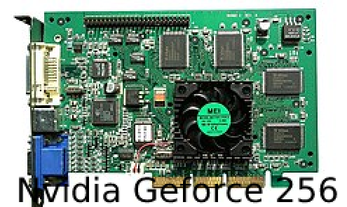

ISTORIE
Prima placă video IBM PC, care a fost lansată cu primul IBM PC, a fost dezvoltată de IBM în 1981. MDA (Monochrome Display Adapter) putea funcționa doar în modul text, reprezantând 80 de coloane și 25 de linii (80x25) pe ecran. Avea o memorie de doar 4KB și o singură culoare. VGA a fost larg acceptat, permițând anumitor corporații cum ar fi ATI, Cirrus Logic și S3, de a lucra cu placa video, îmbunătațindu-i rezoluția și numărul de culori. Astfel s-a dezvoltat SVGA (Super VGA), care a ajuns la 2 MB de memorie video și o rezoluție de 1024x768 cu 256 de culori.

În 1995 primele plăci video 2D/3D au fost lansate, dezvoltate de Matrox, Creative, S3, ATI și altele. Aceste plăci video au urmat SVGA, dar aveau implementate funcții 3D. În 1997 a fost lansat cipul grafic Voodoo 3dfx, care a fost mult mai puternic în comparație cu celelalte, introducerea unor efecte 3D, cum ar fi cartografierea PMI, Z-buffering și anti-aliasing in piața de consum.

După această placă, o serie de plăci 3D au fost lansate, cum ar fi Voodoo2, TNT și TNT2 de la NVIDIA. Intel a dezvoltat AGP (Accelerated Graphics Port) care a rezolvat problema dintre procesor și placa video.

Din 2003 ATI (Cumparat ulterior de AMD) și NVIDIA au dominat piața plăcilor video cu liniile Radeon și GeForce, respectiv.
Acum, majoritatea calculatoarelor folosesc placi video pe interfata PCIe (PCI Express) (PCI = Peripheral Component Interconnect).
Cea mai puternică placă video care se cunoaște în prezent este Radeon Pro Duo, de tip High Bandwidth Memory (HBM), ce dispune de 8 sau 12 GB de memorie video și 4x512 biți lățime de bandă, ceea ce-i permite să suporte cu ușurință rularea jocurilor PC sau a videoclipurilor la rezoluție 4K (4096x2160).